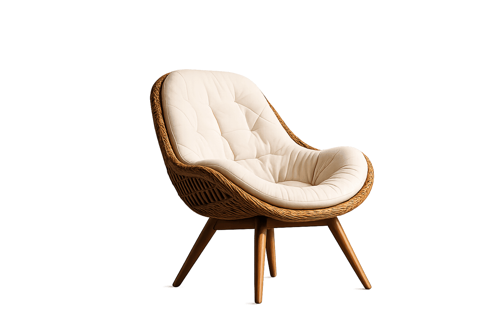

01↗
01↗Mti wa Mwaloni · Kamba Asilia
Zimechorwa na kutengenezwa kwa mikono katika karakana yetu ya Rotterdam.

( Gundua zaidi ) ↓Fahari ya utulivu: umbo lisilopitwa na wakati, malighafi halisi na subira ya kuunganisha kila kiungo vizuri.
Kutana na mafundi ↗“Ufundi ni wa kiwango cha juu sana. Unaweza kuona na kuhisi tofauti katika kila undani.”— Makazi ya HUBA FURNITURE DECORATION, Antwerp
Tunaanza na nafasi yako, mtindo wako wa maisha, na matarajio yako hapa studio au kwa simu.
Michoro yenye vipimo sahihi na sampuli za mbao, ikirekebishwa hadi ikae sawa.
Wiki sita hadi kumi za kuunganisha, kuchonga, na kumalizia kwa mikono miwili.
Kuwekwa nyumbani kwako kwa uangalifu mkubwa, pamoja na mwongozo wa utunzaji na kadi ya fundi.
 Kiti cha sanaa cha Ribbon
Kiti cha sanaa cha Ribbon
 Keilestraat 9, Rotterdam
Keilestraat 9, RotterdamKila samani kwenye chumba chetu cha maonyesho inaweza kukaliwa, kufunguliwa na kupapaswa. Njoo ukutane na mafundi, ujionee mbao kwa ukaribu, nasi tutakuandalia kahawa safi.
Miaka mitatu sasa, meza hii bado ni kitu cha kwanza kila mgeni anachoulizia. Ilifanya sebule yote ya nyumba kueleweka na kupendeza.